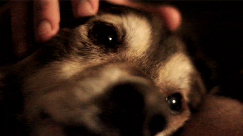
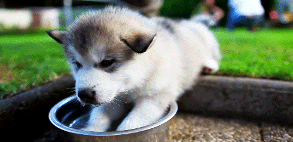
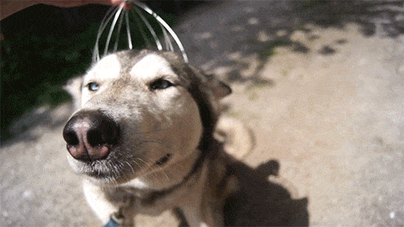

Son dos hermanos rescatados, tienen apróx. 3 meses y buscan una familia que los reciba y les den mucho amor.
Adóptanos, te estamos esperando!

Mestizo rescatado, fue encontrado en pleno abandono, es un cachorro un poco asustadizo pero cuando toma confianza con las personas es un perrito muy tierno.
- 
Cachorro muy tranquilo, rescatado de un lugar solitario, busca una familia comprometida a cuidarlo y entregarle mucho cariño.
Tierno perrito, busca hogar para entregar su compañia, especial para lugares pequeño ya que, por su tamaño es especial para departamentos.
- 
Pequeño siberiano rescatado, busca una familia que pueda entregarle cariño, por lo que se ve fue abandonado muy pequeño y necesita amor.
- 
Siberiano rescatado, especial para personas adultas, es un perrito guía para personas que lo necesitan, es muy buen compañero.
Rescatado de un puente, fue bañado y arreglado, busca un hogar donde pueda ser cuidado y le entregen mucho cariño.
Dulce perrita, busca una familia con niños, es muy juguetona y perfecta para los niños del hogar, es muy apegada a ellos y le gusta que pasen tiempo con ella.